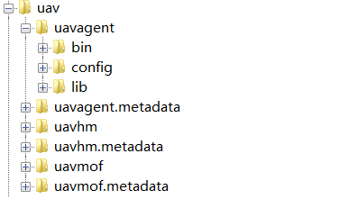

快速部署
环境要求
- 64bit OS, Linux/Unix/Mac/Windows is recommended;
- 64bit JDK 1.8+;
- Tomcat 7+;
第三方服务部署
首先安装rocketmq，mongodb，redis。若需存储历史数据则安装opentsdb，若需日志/调用链/线程分析功能则安装elasticsearch，若需上帝罗盘功能，则安装grafana；若需人员权限管理功能，则安装LDAP。启动所有第三方服务。
获取安装包
在https://github.com/uavorg 下载uavpackage安装包。在{UAVLocation}目录解压uavpackage，得到文件夹uav和apphub.war文件。
目录结构
uav目录结构如下  解压后的uav目录下包含uavagent、uavhm和uavmof三个文件夹，包含了各自的启动脚本、配置文件以及lib文件。在HM/Agent/MOF启动(加载)后，会产生相应的metadata文件夹，metadata包含了日志文件和持久化数据等。
启动健康管理服务(HM)
进入uavhm文件夹bin目录，启动hm。
cd {UAVLocation}/uav/uavhm/bin
chmod +x *.sh
./start.sh
启动监控代理程序
进入uavagent文件夹bin目录，启动uavagent
cd {UAVLocation}/uav/uavagent/bin
chmod +x *.sh
./start.sh
接入中间件增强框架(MOF)
增加CATALINA_OPTS环境变量
export CATALINA_OPTS=-javaagent:{UAVLocation}/uav/uavmof/com.creditease.uav.agent/com.creditease.uav.monitorframework.agent-1.0-agent.jar -jar start.jar
启动apphub
将apphub.war拷贝到tomcat webapps目录下，并启动tomcat。
访问localhost:8080/apphub，使用用户名admin密码admin登录